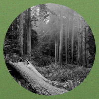
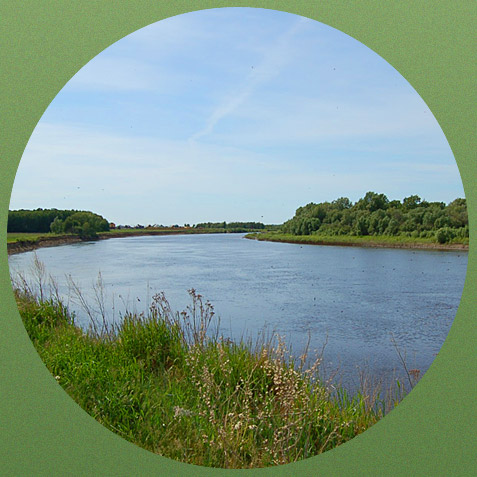
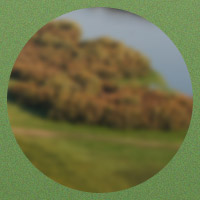

Поселок для комфортной жизни
Экологически чистое, живописное, тихое место, идеально подходит для постройки загородного дома, при этом находится недалеко от города. Московский тракт считается одним из лучших направлений: роза ветров 80% в сторону города с запада; дорога в 4 полосы позволяет доехать до города за 15 - 20 минут.

Продано!
Первая очередь

240участков свободно
Вторая очередь

Скоро!
Третья очередь